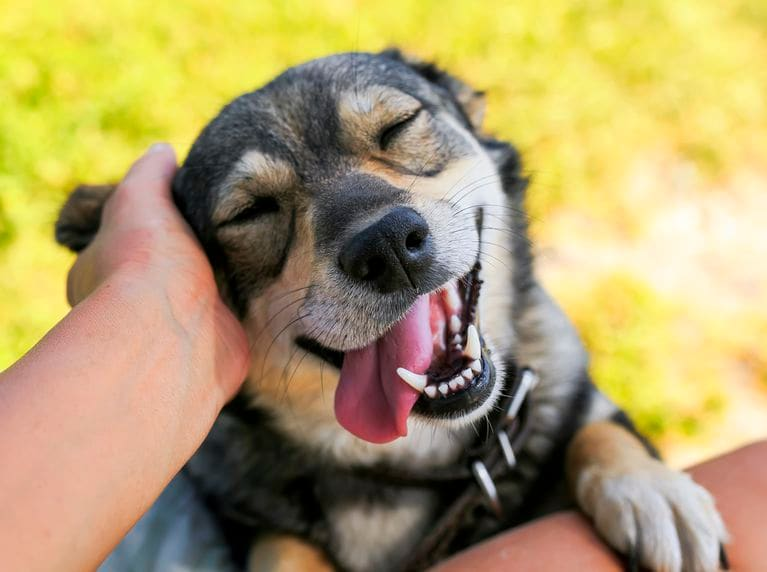

There are so many benefits of having a dog, of course there’s the obvious benefits like extra exercise and a best friend for life, but they can also improve your physical and mental health!
Nothing beats a long walk with your four-legged friend on a fresh, spring morning. Or seeing the joy on their faces when you pick up a ball and they know it’s playtime in the local park! Even relaxing at home feels better in each other’s company.
There’s an old saying, which is certainly true, that dogs repay the love you give them ten-fold. Before you rush out and adopt a dog, it’s important to think it through very thoroughly. Caring for a dog can be hard work and it’s a lifetime commitment, as your dog will be relying on you for many years to come. Once you’re sure you have the time and lifestyle to include a dog in your life, and you’ve done your research about different dog breeds and personalities it’s time to look at all the benefits of owning a dog.